12.11.20
Как правильно использовать закись азота
Употребление веселящего газа растет день ото дня, все больше людей выбирают именно этот, более здоровый способ провести время весело, ведь закись азота гораздо лучше алкоголя. Но прежде чем покупать веселящий газ, стоит подробнее узнать правила использования пищевой закиси азота, есть простые, но очень важные правила. Принимать его нетрудно - газ просто вдыхают. Однако, это лучше не делать непосредственно из баллона, для этого существуют специальные итальянские шарики.

11.11.20
Аксессуары для закиси азота
Все те, кто любит какой-либо процесс, обязательно привносят в него частичку эстетики, чтобы морально удовлетворить себя, сделать этот процесс не только удобнее, но и красивее, лучше. Именно добавление этой самой эстетики и превращает рутину или привычку в тот самый процесс, который и может доставить нам удовольствие.

19.10.20
Попперс Voodoo
Времена колдунов и магов хоть и прошли, люди все равно продолжают в глубине души верить в сверхъестественное и предполагать, что чудеса возможны. Такова уж человеческая натура – верить в необъяснимые случаи, поэтому шаманы и колдуны никуда не делись, а просто приняли иную форму. Так получилось и со сферой попперсов, одна из новинок которых так и называется – «Колдун» или «Шаман», это попперс Voodoo.
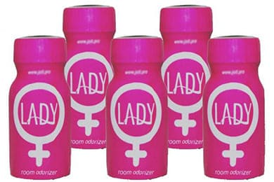
09.09.20
Попперс Lady
Такой вещью как попперсы сегодня уже никого не удивить, и если двое влюбленных хотят вместе хорошо провести время – именно этот препарат они и купят для того, чтобы все было на высшем уровне. Но вот вопрос – что же можно сделать в сфере попперсов в плане новинок, чтобы удивить уже весьма закормленную в этом плане аудиторию, большой вопрос. Но производители снова смотрят на шаг вперед и уверенно предлагают нам персональные предложения – то есть попперсы, подходящие к определенной ситуации и для нужного настроения.

13.08.20
Как правильно надувать шары закисью азота
Некоторые на первый взгляд простые действия все же нуждаются в объяснении и подробной инструкции, особенно те, которые вроде бы кажутся несложными. Как же правильно надувать шарики из баллона веселящим газом и какие ошибки подстерегают новичков и даже опытных любителей газа – разберемся. Дня начала стоит выяснить в каком положении у Вас находится баллон с газом при наполнении – это важно.
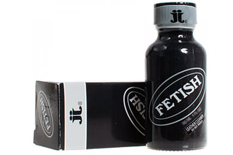
31.07.20
Попперс Fetish
Эволюция попперсов продолжается с момента их создания и идет в сторону индивидуализации – то есть креатива, целью которого является производство попперсов для каждого вида секса и даже исходя из того, как и когда он будет использоваться. Так, попперс Fetish появился относительно недавно, его объем – 10 миллилитров, что весьма свойственно большинству попперсов родом из Канады. Этот канадец имеет весьма серьезную мощность, хоть мы и ставим ему оценку 2 из 3 возможных по нашей шкале. Но не стоит его недооценивать – здесь мощность скорее ближе к максимальному показателю в 3 балла, чем к типичной «двойке».

09.07.20
Попперс Rush
Так бывает в разных сферах, когда один товар или продукт буквально является флагманом, самым известным в своем роде, да или вообще самым узнаваемым, вот так и случилось с попперсом Rush. По своей сути именно британский попперс Раш и начал историю популяризации своей сферы, поэтому если Вы и видели где-то рекламу попперсов, то это наверняка был он. Англия по праву называется родиной попперсов, хоть Канада и Франция до сих пор пытаются составить конкуренцию, поэтому британские попперсы – стандарт качества.

08.07.20
Попперс Buzz
Одним из самых популярных и известных уже достаточно долгое время попперсов является британский попперс Buzz. Он уже давно на слуху и имеет хорошие отзывы практически ото всех категорий любителей попперсов, как от новичков, так и до достаточно опытных практикующих. Buzz – это препарат родом из Англии, поэтому его объем пузырька равен 10 миллилитрам. Он не самый мощны из известных, но и не самый слабый, поэтому его силу можно оценить как 2 из 3 по шкале мощности, а вот действие у него достаточно продолжительное, плавно нагнетающее и плавно отступающее.

02.06.20
Хорошо ли человеку под веселящим газом
Достаточно часто новички в плане употребления веселящего газа на начальном этапе задаются вопросом, а хорошо ли человеку под веселящим газом, как он себя чувствует и помнит ли происходящее. Этот вопрос развеивается достаточно быстро с первой пробой газа и сразу становится понятно, что веселящий газ не является чем-то противозаконным или сильнодействующим, он просто помогает расслабиться и отдохнуть в компании или в одиночестве.

01.06.20
Попперс Diablo
Как часто бывает – название достаточно точно отражает суть продукта, конечно если это не надуманный рекламный ход. Именно такая положительная история и случилась с попперсом Diablo, который по сути и является настоящим дьяволом в плане чувств и эмоций, которые вызывает данный препарат. Диабло со многих языков переводится как «дьявольский» или «адский», в частности – с французского, откуда как раз этот попперс и родом.

18.05.20
Попперс Iron Horse
Родом из Британии попперс Iron Horse уже успел приобрести весьма хорошую репутацию и большую армию поклонников несмотря на то, что он вышел на рынок гораздо позже ставших хитами Rush и Buzz. Поэтому можно с полной уверенностью сказать, что у попперса Айрон Хорс весьма хорошие планы на будущее. «Железный конь», а именно так и переводится название Iron Horse, является самым настоящим воплощением силы и напора, безудержной сексуальной энергии и фантазии.

14.05.20
Попперс Fist
Попперс Fist – это самый настоящий кулак, причем именно так он и переводится. Этот британец является одним из самых мощных попперсов не только среди английского производства, но и среди всех мировых брендов. Попперс Фист также и один из самых популярных, узнаваемых товаров в данной индустрии, он давно возведен в ранг хитов и лучших за всю историю. Рассказывать об этой живой легенде достаточно просто, она сама себя рекламирует, может легко дать фору многим известным попперсам. Но то, что отличает Fist от многих и многих других конкурентов – это его предназначение.

07.04.20
Заказал веселящий газ – купи маску
Наверняка каждый из жителей Москвы и ближайшего Подмосковья столкнулся с тем, что при желании или необходимости купить медицинские маски – их просто не найти, ни в аптеках, ни в интернет-магазинах, их нигде нет. Обычные одноразовые маски 3-5 штук в комплекте, каждую из которых рекомендуют носить по 2-4 часа, если и найдется в продаже – то по цене в 100-150 рублей и более за упаковку.

01.04.20
Веселящий газ и самоизоляция
Во всем мир сегодня сложилась достаточно сложная и серьезная ситуация, коронавирус добрался до Москвы и уже сковал город карантином. Жители столицы и Подмосковья не поддались на уговоры властей и медиков и стали выходить на улицы, в итоге все свелось к принудительному сидению дома. Самоизоляция на текущий момент становится одним из самых эффективных способов не заразиться, ведь масок в аптеках нет, антисептиков и санитайзеров также не предвидится в ближайшее время.

11.03.20
Доставка веселящего газа как способ не заразиться
Все чаще и чаще со всех уголков мира приходят весьма жутковатые новости – коронавирус шагает по планете высоким темпом. Вот уже и в Москве не так давно было зарегистрировано несколько случаев этого нового вируса, люди боятся выходить из дома и все чаще предпочитают доставку на дом. Причем, учитывая развитость инфраструктуры у нас в городе сегодня можно заказать на дом практически все, начиная от еды и техники и заканчивая всевозможными услугами.

19.02.20
Опасность китайского веселящего газа
Не проходит и месяца без негативной новости о веселящем газе и все они связаны с подделками, дешевым газом китайского производства, которым любит увлекаться молодежь желая сэкономить. Так в прошлом месяце в одном из гаражных кооперативов на самом юге Москвы было найдено тело девушки 19 лет, позднее следователи выяснят, что причиной стало отравление и асфиксия. Как выяснилось, компания молодых людей купила дешевую подделку – веселящий газ китайского производства в баллончиках и решила отдохнуть в гараже.
20.01.20
Предзаказ веселящего газа
Оксид азота пользуется популярностью во многих странах мира. Не исключение и Россия. Популярность вещества обусловлена его непревзойденными свойствами. Закись азота позволяет погрузится в атмосферу драйва, позитива и эйфории. В тоже время закись азота отличается отсутствие побочных эффектов, в том числе синдрома похмелья, как например, спиртное.
25.12.19
Доставка закиси азота на Новый год
Компания «Кулгаз» занимается реализацией первоклассной закиси азота уже не один год. Продукция сертифицирована, и поставляется в заводских опломбированных баллонах. Заказать оксид азота на Новогодние праздники это отличный выбор. Покупать закись азота лучше у проверенных специализированных компаний, которые уже давно сотрудничают с крупными официальными заводами-изготовителями.
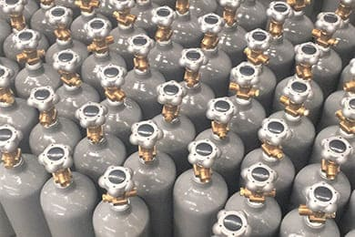
11.11.19
Заводские баллоны пищевой закиси азота
Оксид азота стал популярен еще в 19 столетии. В наше время это вещество ничуть не утратило своей популярности. Его применяют в целом ряде отраслей. В том числе в медицинской практике - хирургия, детская стоматология, и даже родильные дома. Производство взбитых сливок и пористых шоколадных изделий также не обходится без пищевого оксида азота. Закись азота перевозится и хранится в баллонах из высокопрочной стали.

22.10.19
Документы для покупки закиси азота
По аналогии со многими товарами и продукцией, которая имеет ограничение по возрасту – веселящий газ также продается с 18 лет и при непосредственной продаже курьер может потребовать у Вас документ, подтверждающий возраст. Да, все дело в тем, что пищевая закись азота обладает легким опьяняющим эффектом, хоть и кратковременным. Но именно этот фактор и не позволяет продавать ее лицам моложе восемнадцати.
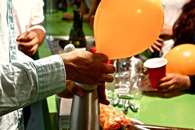
22.10.19
Спрос на пищевую закись азота
Спрос на такое вещество, как пищевая закись азота сильно менялся после его открытия. Изначально сразу после осознания того, что этот газ можно употреблять внутрь для развлечения – спрос на него значительно вырос, но в условиях достаточно сложного синтеза в те времена веселящий газ был доступен только ограниченному кругу лиц – знати и вельможам. Как только бум прошел – спрос на закись упал, это произошло в конце 19 века, когда в мир пришло зло в виде опиума, который скосил много здоровых людей.
07.10.19
Снятие стресса веселящим газом
Оксид азота был открыт много лет назад, но не утратил своей актуальности и в XXI столетии. Закись азота имеет специфические свойства, которые позволяют использовать ее в самых разных сферах деятельности. Используют оксид азота как хирурги так и автогонщики. Данное вещество применяется даже виноделами и кондитерами. В развлекательной индустрии оксид азота имеет огромную популярность. В кафе, барах, и ночных клубах, оксид азота используют для поднятия настроения, и создания атмосферы драйва, веселья, и куража.

24.09.19
Почему не стоит заменять пищевую закись медицинским газом
Закись азота была разработана в средневековой Англии. Усердная работа естествоиспытателя Джозефа Пристли не прошла даром. Человечество высокого оценило работу ученого. Оксид азота применяют не только промышленники и виноделы, но и медики, и даже любители автогонок. Впрыск в двигатель порции технической закиси азота позволяет добиться значительного ускорения гоночной машины. В сфере развлечений используют пищевую закись азота.

23.09.19
Неудобство скругленного дна у баллонов высокого давления
Закись азота стала известна более двух веков назад. В те далекие времена она обрела особую популярность на баллах и вечеринках представителей английской элиты. Причина была в необычных свойствах оксида азота. Это вещество вызывало радость, беззаботное веселье и кураж. В наше время оксид азота также не утратил своей популярности. Его широко применяют не только в барах и ночных клубах, но и в операционных, кондитерских цехах, и даже виноделии.
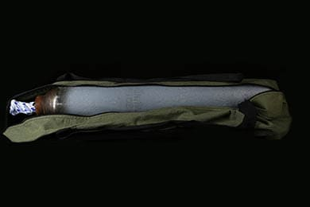
18.09.19
Как правильно обращаться с полным баллоном закиси азота
Закись азота стала известна человечеству еще в XIX веке. С тех пор оксид азота активно применяли не только химики и врачи, но и представители дворянства, а также автогонщики. Закись азота обладает удивительными свойствами, которые позволяют не только производить качественную анестезию, но и добивать наивысших результатов в автоспорте. Развлекательная индустрия (ночные клубы, бары, кафе) в современном мире также не обходятся без оксида азота.

06.08.19
Действующие вещества пищевой закиси азота
Закись азота успешно используется человечеством уже несколько сотен лет. Первооткрывателем закиси азота был британский ученый Джозеф Пристли. Он синтезировал сладковатый газ, который впоследствии получил названия – оксид азота. Оксид азота он же закись азота, используется не только в гонках на автомобилях. Его применяют медицинские работники, пекари, кондитеры, и даже виноделы. Очищенная пищевая закись азота может применяться в пищевой промышленности, а также в развлекательной индустрии.

15.07.19
Особенности промышленного производства пищевой закиси азота
Закись азота известна в развитых странах мира еще с XVIII столетия. В настоящее время она ничуть не утратила своей популярности, и даже производится в промышленных масштабах. Её широко используют в медицине, кондитерском производстве, и даже автоспорте. Распространенный способ получения оксида азота это разложение аммиачной селитры. Процесс производства оксида азота осуществляется в условиях завода, на специальном оборудовании.

08.07.19
Закись азота 3,5 литра – один из самых популярных баллонов
Закись азота применяется не только в медицине, но и в кондитерском производстве, и даже в ракетах. В баллонах оксид азота находится под высоким давлением, поэтому важно соблюдать меры безопасности и приобретать продукцию только у специализированных компаний. Преимущества баллонов объемом 3,5 литра очевидны. Такие баллоны компактны, удобны в эксплуатации, и не занимают много места. Среди всех видов баллонов для закиси азота наиболее популярны баллоны объемом 3,5 и 10 литров.

02.07.19
Нецелевое использование закиси азота
Закись азота используется во многих отраслях деятельности. Оксид азота может иметь различный состав и отличаться по степени очистки. Для использования в пищевой промышленности и медицине пригодна только очищенная пищевая закись азота. В тоже время для двигателей автомобилей и ракет применяют техническую закись азота, которая имеет специальные добавки и присадки. Использования технической закиси азота для медицины или продуктов недопустимо.
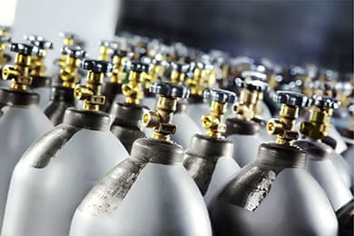
01.07.19
Баллон в аренду – почему выгодно
Закись азота используется во многих сферах деятельности человека. Начиная от обработки емкостей с вином, и заканчивая гоночными автомобилями. Закись азота хранится и перевозится в специализированных баллонах. Эти баллоны изготавливают на сталелитейных заводах по особой технологии из легированной стали. При покупке закиси азота выгодно пользоваться услугой аренды баллона. Таким образом, вы сэкономите на стоимости самого баллона.

27.06.19
Срок годности и хранения баллонов
Закись азота была открыта несколько сот лет назад. Несмотря на это она до сих пор применяется в самых различных отраслях деятельности. В том числе в медицинской сфере, кондитерском производстве, и даже автогонках. Закись азота хранят в баллонах из высокопрочной стали. Вещество находится под большим давлением. При использовании баллонов нужно строго соблюдать правила безопасности. Баллоны должны храниться в помещении с температурой воздуха не более 25 градусов по Цельсию.
24.06.19
Норма веселящего газа
Сколько нужно употребить закиси азота, чтобы было хорошо – вот один из основных вопросов, которым задаются новички в употреблении закиси азота. Скажем сразу – норма для каждого своя, она зависит от веса тела, восприимчивости организма, метаболизма и многих других вещей, как и в случае с алкоголем. Так как же найти свою дозу? Только опытным путем. Не нужно сразу вдыхать несколько шариков один за другим, если Вы никогда не дышали веселящим газом.

24.06.19
Веселящий газ в баллончиках 8 грамм
Очень часто при просмотре объявлений о продаже веселящего газа фигурируют баллончики на 8 грамм, которые продаются вместе с удобной открывалкой и несколькими шариками, причем одного такого баллона хватает ровно на 1 шарик. Казалось бы, удобно, недорого. Такие баллончики похожи на аналогичные для пневматических пистолетов, но заполнены закисью азота. В них есть один большой недостаток – почти все они сделаны в Китае и газ там очень низкого качества.

24.06.19
Баллоны от других газов
Практически все баллоны имеют возможность повторной заправки газом, и веселящий газ не является исключением. Но для повторной заправки не все продавцы газа используют подходящие баллоны – некоторые применяют для заправки баллоны, которые были заполнены совершенно неподходящим газом для вдыхания, например, технической закисью азота, фреоном и даже пропаном. Это создает угрозу здоровью тех, кто дышит газом, поскольку не все продавцы еще грамотно проводят санитарную обработку баллонов, если проводят вообще.
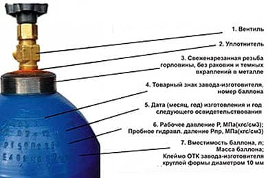
17.06.19
Маркировка баллонов закиси азота
Закись азота стала популярной еще пару сотен лет назад. Причина в необычных свойствах этого газа. Он вызывает чувство неподдельного веселья, радости и эйфории. Качественная очищенная закись азота позволяет отвлечься от повседневности, серых будней и плохих эмоций. Приятно провести время и вдоволь насмеяться. На баллонах с закисью азота есть специальная термоусадка с логотипом производителя. Она служит в роли «пломбы», которая означает, что баллон не вскрывался после выпуска из завода.

17.06.19
Сладковатый привкус закиси азота
Закись азота была синтезирована и исследована ученым из Британии Джозефом Пристли. С тех пор прошло несколько столетий, но до сих пор оксид азота не утратил своей популярности. Его применяют в различных сферах. В том числе в продуктах. Добавка E942 это западная маркировка той самой закиси азота, имеющей сладковатый привкус. Оксид азота нашел широкое применение в целом ряде отраслей. Его применяют кондитеры, автогонщики, виноделы, пекари, а также хирурги и стоматологи.
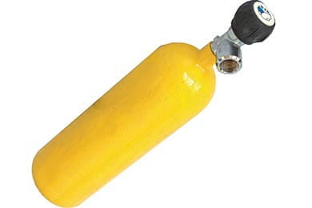
14.06.19
Как не обморозить руки при вскрытии баллона
Закись азота хранится в специальных баллонах. При её использовании важно аккуратно обращаться с баллоном. Веселящий газ находится под высоким давлением, поэтому важно, чтобы на баллоне была специальная насадка. Она позволит использовать баллон без риска обморожения, и потери веселящего газа. Заказывать насадки лучше у специализированной компании, которая реализует только сертифицированную продукцию.
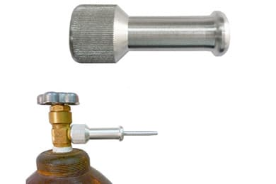
13.06.19
Чем удобна насадка на баллон
Закись азота стала популярной из-за своих необычных свойств. Она расслабляет, вызывает чувство безудержного веселья, и позволяет отвлечься от серых будней. Веселящий газ - закись азота, перевозят и хранят в специальных баллонах. Пользоваться баллоном без насадки нецелесообразно. Можно потерять часть газа, и в тоже время есть риск обморозить руки. Поэтому лучше использовать баллон с веселящим газом при помощи специальных насадок.

13.06.19
Как переносить баллон вручную
Закись азота используют в самых разнообразных сферах. В том числе в медицине, кондитерском производстве, автогонках. Для переноса баллонов объемом 10 литров удобно использовать специальные сумки-переноски. Они изготовлены из высокопрочного материала, и позволяют без особых затруднений переносить баллоны с закисью азота. Компания «Кулгаз» реализует сумки-переноски по приемлемым ценам.
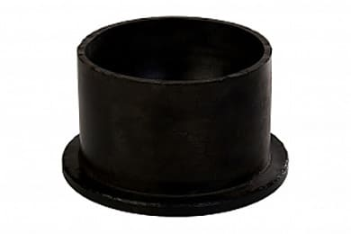
06.06.19
Чем удобна подставка для баллона
Закись азота была открыта довольно давно. Прошло более двух сотен лет, но этот газ ничуть не утратил своей актуальности. Оксид азота находится под высоким давлением в специальных баллонах. Дно таких баллонов имеет закругленную форму. Такая геометрия баллонов обусловлена безопасностью. При такой форме стенки баллона подвергаются меньшему воздействию давления.
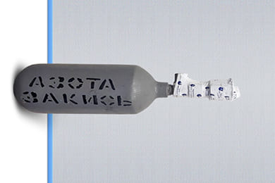
04.06.19
Закись азота – кому она нужна
Закись азота была синтезирована еще в 18 столетии в Великобритании. С тех пор она применяется многими специалистами, в различных сферах. Оксид азота обладает свойствами, которые необходимы медикам, кондитерам, виноделам, и даже автогонщикам. В сфере автогонок используют техническую закись азота. Такое вещество имеет множество примесей, и благодаря своим свойствам, позволяет существенно повышать скоростные качества автомобиля.
22.05.19
Как лечат веселящим газом
Джозеф Пристли, британский ученый, дал миру необычное вещество. Джозеф смог синтезировать веселящий газ. Молекула, состоящая из азота и кислорода, вызывает чувство эйфории, беззаботности и веселья. Качественный веселящий газ позволит забыть плохие воспоминания, и уйти от серых будней. При покупке газа важно обратить внимание на продавца. Не доверяйте первому попавшемуся дилеру. Сейчас много закиси азота изготовленной кустарно.

17.05.19
Попперсы-подделки
Покупая попперсы у первого попавшегося продавца, вы имеете большой шанс нарваться на подделку. Данный товар пользуется большим спросом. Но не стоит бросаться на первые попавшиеся баночки. Низкая цена может быть показателем того, что вам пытаются продать подделку. Мало того, что она будет неэффективна, можно ещё и навредить здоровью. Как правило, попперсы, изготовленные кустарным способом, отличаются низким эффектом или вовсе его отсутствием.

17.05.19
Британские попперсы
Сфера развлечений играет весомую роль в жизни человека. Важно находить время для расслабления и отдыха. Человек всё-таки не робот. Зарядится положительными эмоциями и качественно отдохнуть можно как в стенах ночного клуба, так и в компании друзей или второй половинки. Попперсы известны еще с прошлого столетия. В России они стали популярными примерно 10-лет назад. Попперс позволяет расслабиться и получить максимально яркие эмоции от общения.
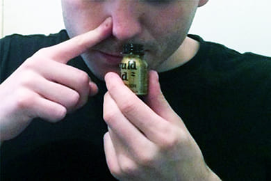
17.05.19
Как правильно дозировать попперсы
Дозировка попперсов и их употребление – достаточно важный момент как для новичков, так и для опытных пользователей, ведь постоянно выходят новинки. Они могут быть более жесткими или мягкими, поэтому дозировка всегда определяется опытным путем, но общие правила все же существуют. Слабые попперсы, которые имеют на нашем сайте индекс 1 из 3 можно просто ставить рядом с кроватью, вдыхать напрямую из баллончика или вкручивать в маску.

14.05.19
Российские попперсы
Производители попперсов известны во всем мире, и самые популярные, качественные и продаваемые – это британские, французские и канадские. Остальные встречаются намного реже, но в последнее время на рынок Москвы стали попадать и попперсы российского производства, о них мы и поговорим. Основная проблема заключается в сырье – химических компонентах, которые используются на производстве.

06.05.19
Французские попперсы
Попперсы известны человечеству ещё с XIX столетия. Эти вещества использовались в основном в медицине как противоядие и при лечении стенокардии. В наше время попперсы пользуются огромной популярностью в сфере развлечений. Благодаря своему составу - наличию алкилнитритов, они вызывают чувство эйфории, и позволяют испытать новые более сильные ощущения в сексе. В Западной Европе и США попперсы стали популярны еще в 1970-х годах.
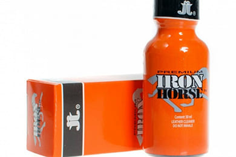
06.05.19
Канадские попперсы
Попперсы бывают различного качества. Если Вы решили приятно провести время и окунуться в мир фантастических наслаждений, то лучше заказать попперс у специализированной компании. Таким образом Вы сможете не только получить должный эффект от вдыхания попперса, но и обезопасить себя и близких от низкопробной продукции. Попперсы, изготовленные в Канаде, всегда отличались высоким качеством и эффективностью.

06.05.19
Срочно купить попперсы
Попперсы интересны тем, что в течение нескольких секунд после вдыхания вызывают чувство расслабления и эйфории. Также эти вещества усиливают сексуальное наслаждение. Компания «Кулгаз» выполняет оперативную доставку попперсов по всей Москве и в другие населенные пункты. Чтобы приобрести попперсы максимально быстро позвоните нашему оператору. В пределах МКАД доставка будет выполнена в пределах 30 минут.

06.05.19
Попперсы в России
Попперсы – это вещества, которые используются в медицинских целях, а также в сфере развлечений. В их состав входят алкилнитриты, которые вызывают чувство эйфории, и способны вызвать более яркие сексуальные ощущения. В России попперсы нашли широкое применение в клубной субкультуре. Еще с 1990-х годов попперсы обрели популярность в среде молодежи, в клубных тусовках, а также частных вечеринках.

06.05.19
Для чего нужны попперсы
При вдыхании попперс позволяет испытать чувство эйфории, и сделать более яркими сексуальные ощущения человека. Попперсы известны еще с XIX века. В то время они уже использовались в медицинских целях. В том числе для лечения стенокардии, а также как противоядие. Впервые препарат был синтезирован в Великобритании. Шотландский доктор Томас Брунтон исследовал влияние попперсов на больных стенокардией.

24.04.19
Веселящий газ и попперсы – можно ли применять
Веселящий газ и попперсы пользуются большой популярностью в развлекательной индустрии. Попперсы являются алкилнитритами, которые вызывают чувство эйфории, и даже сексуального возбуждения. Часто возникает закономерный вопрос – можно ли смешивать попперсы и веселящий газ? Ответ можно. Но всегда нужно уметь рассчитывать свои силы.

24.04.19
Сертифицированный череповецкий газ в Москве
Веселящий газ был открыт довольно давно. Британский ученый Д. Пристли синтезировал это вещество более двух столетий назад, и с тех пор этот газ нашел широкое применение в промышленности, кондитерском производстве, сфере медицинских услуг, и даже автогонках. Популярность закиси азота обусловлена её свойствами. Она вызывает чувство эйфории и веселья. В медицине она используется в качестве анестезии. Автогонщики применяют оксид азота для двигателей своих машин.

24.04.19
Признаки качественного веселящего газа
Веселящий газ состоит из молекул, как и другие вещества. Молекула веселящего газа - закиси азота, состоит из 2-х атомов кислорода и одного атома азота. В этом веществе также могут быть различные примеси другие компонентов. Качество веселящего газа зависит от многих факторов. Прежде всего, это качество исходного сырья и оборудование на котором производят очистку газа. Многие компании реализуют закись азота, но далеко не вся закись нормального качества.
24.04.19
Можно ли заполнять шарик газом несколько раз
Наиболее удобным способом употребления закиси азота - веселящего газа, являются шарики. Шарики легко наполнить газом, который находится под давлением в баллонах. При вдыхании возникает приятное ощущение, чувство веселья и эйфории. Важно, чтобы шарики были хорошего качества, тогда их можно будет применять не один раз. Компания «Кулгаз» реализует шарики для закиси азота высокого качества.
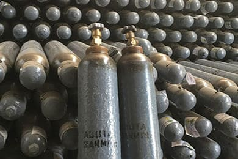
22.04.19
Примеси в газе пищевой закиси азота
Ни для кого не секрет, что в любом газе содержатся примеси, они необходимы для более удобной работы с газом, его оптимального применения или прочих целей, но иногда они бывают лишними – давайте разберемся с этим. Медицинский газ закиси азота содержит вещество для седации – обезболивания, технический газ содержит присадки для улучшения характеристик двигателя, а пищевая закись азота – кислород и вкусовую добавку.
17.04.19
Пищевая закись азота в ночных клубах
Закись азота – это вещество, молекула которого состоит из одного атома азота и двух атомов кислорода. Другие название – диоксид азота, оксид азота, веселящий газ. Также это вещество получило название Воздух Ибицы из-за огромной популярности на средиземноморском курорте - Ибица. В России закись азота получила широкое распространение в развлекательной индустрии. Кроме широкого разнообразия спиртных напитков, в клубах можно встретить и закись азота.

09.04.19
Веселящий газ и воздух Ибицы
Веселящий газ - закись азота, применяется в медицинской сфере, кондитерском производстве, пищевой промышленности, и также в ДВС и ракетных двигателях. Одной из сфер применения веселящего газа является развлекательная индустрия. В прибрежной зоне Средиземного моря находится множество курортов. Один из самых знаменитых мест отдыха в Западной Европе это остров Ибица, расположенный на Балеарском архипелаге.
03.04.19
Веселящий газ в домашних условиях
Веселящий газ прочно вошел во многие сферы деятельности. Медицина, кондитерское производство, пищевая отрасль, и даже ДВС автомобилей и ракет. Попытки создания закиси азота - веселящего газа, ни к чему хорошему не приводят. Хорошо если просто получится некачественный суррогат. Но может произойти и более пагубное событие. Химические соединения, которые присутствуют в процессе синтеза веселящего газа, взрывоопасны.
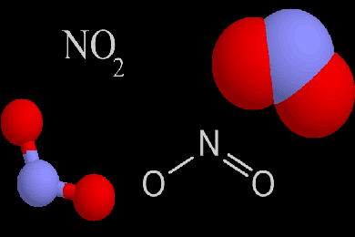
29.03.19
Веселящий газ состав
В 70-х годах XVIII столетия мировому научному сообществу стало известно об оксиде азота. В те далекие времена опыты в лаборатории проводил естествоиспытатель Джозеф Пристли. Получив закись азота в лаборатории, он дал ему наименование – нитрозный воздух. В наше время, веселящий газ, он же закись азота, применяется во многих отраслях, например производство продуктов и упаковки, медицина, реактивные двигателя, автогонки.
26.03.19
Под веселящим газом
Вопрос поведения человека под веселящим газом в последнее время волнует многих, поэтому мы решили осветить подробнее данный вопрос. Начать стоит с самого определения, ведь веселящий газ имеет еще несколько названий. Закись азота, оксид азота, воздух Ибицы. Известен этот бесцветный газ более двух столетий. Применяют его в кондитерском производстве, медицине и автогонках. Распространен также очищенный веселящий газ, который пригоден для употребления.

27.02.19
Закись азота последствия
Многих наших клиентов часто интересует один насущный вопрос – есть ли какие-то последствия от употребления закиси азота. Постараемся в данной статье объяснить все предельно просто. Сама по себе пищевая закись азотаявляется нейтральным газом, и не содержит вредных примесей, поэтому никаких последствий от вдыхания или даже от постоянного употребления до сих пор не выявлено.
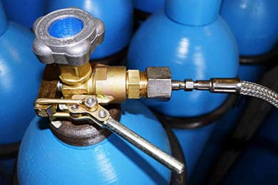
27.02.19
Меры предосторожности при работе с баллонами
Как и при работе с любым объектом высокого давления – обращение с баллонами, содержащими в себе закись азота, необходимо соблюдать меры предосторожности. Первое, что следует соблюдать при попадании баллона к Вам в руки – это срок годности, а также целостность баллона и вентиля. Если срок годности давно истек – от обращения с баллоном лучше отказаться и передать его в руки специалистов.
27.02.19
Закись азота для after-party
То, что происходит после любой тусовки, клубной вечеринки или просто ночного кутежа называется after-party. Часто ее называют просто по-русски автопати или афтерпати, это, собственно, не так важно. Ключевым моментом after-party является расслабление, отдых от самой вечеринки или клубного отрыва, поэтому на ней часто присутствует кальян, легкий алкоголь, расслабляющая музыка и прочие вещи для релакса.
27.02.19
Воздух Ибицы
Воздухом Ибицы называют закись азота уже довольно давно, этот псевдоним газа прижился после того, как на острове Ибица стали проходить самые безудержные молодежные вечеринки, а сам остров из испанского архипелага Балеарских островов стало синонимом самого жаркого отдыха. Здесь собираются самые лучшие DJ, проходят самые разные фестивали, одним словом – это мировая столица вечеринок и веселья.
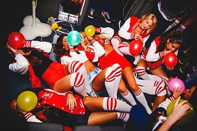
27.02.19
У кого лучше купить закись азота
В нашей новой статье мы не будем объяснять, что такое закись азота и где ее лучше купить, а просто приведем ряд примеров, почему не стоит обращаться в первую попавшуюся компанию и заказывать подозрительный газ ниже рыночной цены. Согласитесь, что весь тот товар, который подлежит употреблению внутрь всегда лучше всего покупать надлежащего качества, это же касается и закиси.

27.02.19
Почему именно воздух Ибицы
Многие из наших клиентов, кто достаточно недавно заказывает закись азота в Москве или Подмосковье, спрашивают нас, почему зачастую этот газ называют воздухом Ибицы (или Ибисы, если учесть все правила испанского языка). Дело в том, что уже не первый десяток лет Ибица стала центром тусовочной жизни не только всей Европы, но и даже Мира. Именно на этот современный остров свободы ежегодно съезжается не один миллион человек.

27.02.19
Оксид азота и закись азота
Последнее время в связи с популярностью закиси у многих покупателей возникает вопрос, является ли одним понятием закись азота и оксид азота. Отвечаем на Ваш вопрос – да, данные понятия полностью идентичны, можете быть уверены в этом на 100%. Оксид азота – это такая же закись, поэтому если Вы ищите пищевую закись азота и нашли оксид – смело заказывайте, только убедитесь именно в том, что данный газ – пищевой.

27.02.19
Закись азота для домашней тусовки
Что может быть лучше домашних посиделок с друзьями и близкими? Пожалуй, ничего. Да, бесспорно, клубные тусовки, вечера в баре или кальянной это весело и круто, но атмосферы дома это не заменит. Здесь мы можем собрать только тех, с кем хотим провести время, выпить, повеселиться. Именно для домашних тусовок и посиделок весьма кстати пригодится закись азота. С помощью этого газа Вы сможете создать ту самую атмосферу, где никто не будет задумываться о серьезном, а будет лишь отдыхать и предаваться веселью.
27.02.19
Веселящий газ за рулем
Вождение автомобиля в нетрезвом состоянии наказывается уголовно, причем опьяняющее воздействие на человека длится достаточно долго, а вот как обстоят дела с веселящим газоми вождением после его приема – давайте разберемся. По своей сути вождение автомобиля не рекомендуется даже при болезни, то есть во время приема препаратов и таблеток, поскольку все они так или иначе воздействуют на реакцию, самочувствие и организм в целом.

27.02.19
Веселящий газ для ночных заведений
Закись азота в ночном заведении сегодня – это не что-то невиданное, она широко применяется в самых различных сферах жизнедеятельности человека. В развлекательной сфере часто можно встретить такое наименование как – веселящий газ. Это пищевая очищенная закись азота, которую употребляют для получения удовольствия в ночных клубах, барах, кальянных и прочих заведениях. Стоит немного рассказать о том, что такое пищевая закись азота.
29.01.19
Особенности доставляемых баллонов
Многие клиенты, которые заказывают доставку закиси азота, переживают за качество самого газа и баллоны, в которых она поставляется. Не секрет, что сегодня в Москве достаточно много фирм, доставляющих некачественный газ или даже газ, которым заполняют баллоны в ненадлежащих условиях. Именно по этой причине стоит выбирать надежного поставщика качественного газа, такого, как КулГаз!
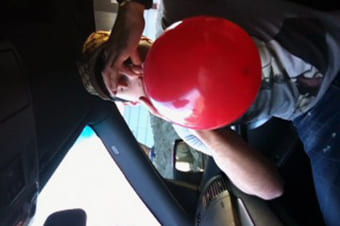
28.01.19
Закись азота и вождение автомобиля
В случае отдыха с друзьями, посещения вечеринки или просто посиделок в баре мы можем забыть о самостоятельном вождении автомобиля, поскольку алкоголь, который Вы выпиваете, будет продолжать оказывать воздействие на организм не менее 8 часов. А вот если Вы попали на вечеринку с закисью азота, то за руль можно садиться уже в самое ближайшее время после ее употребления.
25.01.19
Конфиденциальность доставки закиси азота
Несмотря на то, что закись азота является абсолютно легальной, и продается без ограничений людям от 18 лет, некоторые наши клиенты переживают за конфиденциальность доставки. Если Вы заказываете закись у нас, на сайте coolgaz.ru, то можете не переживать за вопрос конфиденциальности и вот по каким причинам
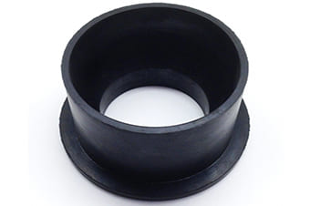
24.01.19
Подставка для баллона 10 литров
Подставка для баллона 10 литров необходима для удобного расположения, и надежной установки большой тары с закисью как в кальянной, баре или клубе, так и дома. С ее помощью баллон 10 литров закиси азота располагается в ней, и можно наполнять шарики не беспокоясь о том, что тара упадет или покатится.

23.01.19
Чем удобен редуктор для баллонов
Заполнение шаров закисью, или любым другим газом – дело достаточно тонкое и требующее аккуратности. Если Вы заполняете газом баллон без применения специальных насадок, то чрезвычайно высок риск упустить достаточно большое количество содержимого баллона просто в воздух, поэтому стоит задуматься о ее приобретении.

22.01.19
Закись азота Мытищи
Мытищи входят в пятерку крупнейших городов Подмосковья, а сам город уже давно перестал считаться отдельной единицей в составе области, а скорее – просто стал одним из районов столицы. Жизнь здесь почти не отличается от столичной, те же бары, кальянные, ночные клубы и тусовки, поэтому и закись азота в Мытищах пользуется не меньшим спросом, чем в районах Москвы.
21.01.19
Сумка переноска для баллона 10 литров
Сумка переноска для баллона 10 литров является весьма удобным способом транспортировки большой, объемной и увесистой тары. В такой сумке нашими курьерами осуществляется конфиденциальная доставка баллонов 10 литров закиси азота. Если Вы нуждаетесь в периодической или постоянной самостоятельной транспортировке больших баллонов – то данная сумка-переноска именно то, что Вам нужно.

09.12.18
Веселящий газ как средство расслабиться
Действие веселящего газа было исследовано практически сразу после того, как его научились синтезировать – в начале 20-го века. Буквально в течение последующих 10 лет в кругах высшего общества молодые люди были увлечены веселыми вечеринками, они собирались вместе и вдыхали закись азота.

09.12.18
Веселящий газ для частных вечеринок
Частная вечеринка – это место отдыха для Ваших друзей и знакомых, для всех тех, кто близок и с кем хочется проводить время. Абсолютно неважно, где Вы захотели провести такой отдых, снять клуб или оторваться на даче или в частном домике под Москвой. Ее можно провести и в собственной квартире – это не имеет никакого значения.
09.12.18
Веселящий газ для ночных клубов Москвы и области
Веселящий газ для ночных клубов поставляется в больших 10 литровых баллонах N2O, вокруг него оборудуются места для релаксации, желающим раздаются шарики для закиси азота. Действие закиси напоминает по своему принципу обычное легкое опьянение, сопровождающееся весельем, однако, учитывая тот факт, что действие N2O заканчивается через 15 минут после прекращения вдыхания, все собравшиеся используют по несколько шариков.